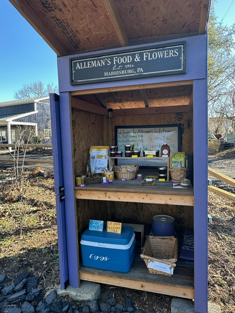

The Alleman Apiary honey stand
Our self-serve honey stand at 3502 High St., Harrisburg, PA 17109 is open from dawn to dusk. Stop by anytime to pick up raw, unfiltered honey from our hives — plus small-batch handcrafted products made from our own beeswax and propolis, and fresh eggs from our homestead when available. Cash, CashApp, and Venmo accepted on the honor system. No staff, no waiting, no awkward small talk if you don't want it. Just real local honey from real local bees.
3502 High St., Harrisburg, PA 17109
Just off of Wood St. Across from Susquehanna Middle School. The stand is on our property — easy to spot, easy to pull up to. If you're not sure where to look, Google Maps gets you right to the door.

Genuinely self-serve
- Pull up. The stand is right there.
- Look at what's available. Different honey varieties, comb honey, beeswax products, lip balms, candles, propolis items, and whatever else we've made recently. Inventory rotates throughout the year.
- Pick what you want. Each item is labeled with the price.
- Pay by cash (drop in the box), CashApp or Venmo (QR code at the stand). Honor system.
- Take your honey and go.
That's it. No staff to bother, no register to wait at, no small talk required.
Honey & hive products
Honey varieties
Spring wildflower, summer, fall, cut comb, and chunk honey when in season. Different varieties at different times of year because the bees forage on different plants each season. Spring wildflower is light amber and floral. Summer honey is medium amber with a fuller flavor. Fall honey is dark amber and robust — almost like molasses.
Small-batch beeswax & propolis
Lip balms, candles, salves, beeswax wraps, and propolis-based items. Inventory rotates throughout the year. When a batch sells out, the next one comes when we have time to make it. There's no schedule — it's small-batch, made-as-we-go work.
Beeswax (bulk)
Clean blocks for crafters, candle makers, woodworkers, and DIY skincare. Available in various sizes. Bulk quantities — call to check supply.
Bee pollen & propolis (seasonal)
Locally collected pollen, raw and refrigerated for freshness. Raw propolis from our hives, occasionally in limited quantities. Both depend on harvest and what the season produced.
Why it's worth the drive
Most "honey" sold in U.S. supermarkets isn't real honey. It's heat-processed, ultra-filtered, often blended with imports, and sometimes adulterated with corn syrup. Our honey is raw — never heated above hive temperature, unfiltered, single-source from our own hives. The pollen, enzymes, and natural variation that make real honey worth eating are still in there.
It also tastes different from supermarket honey. Spring honey vs. fall honey from the same apiary tastes different because the bees were working different flowers. That's how local honey is supposed to be.
We love returned jars
Got empty glass mason jars from us? Bring them back! Leave clean jars at the stand any time it's open and we'll wash, sanitize, and refill them for a future batch. Good jars are getting expensive, reusing them keeps our prices down, and it's one less thing in the recycling bin. Lids too, if they're in good shape.
Plastic containers we can't reuse — recycle those at home. But glass mason jars always have a home here.
Larger orders & special requests
For bulk honey, larger beeswax orders, custom requests, or specific varieties not currently at the stand, call or text 717-379-3248. We can usually accommodate larger orders with a few days' notice and can set aside specific items for pickup.
For wholesale inquiries — local farm stands, restaurants, specialty stores, gift shops — same number. We supply small batches to local partner locations across Central PA.
Honey stand FAQ
Is the stand really open all the time?
Yes. It's a self-serve outdoor stand — open dawn to dusk. Weather dependent, and if we're out of town. Stop by whenever it's convenient for you during the day.
What if my favorite honey isn't there?
Honey varies by season. If you want something specific, call or text 717-379-3248 to check current availability. We can sometimes bring out a jar from storage for a planned pickup if you give us a day's notice.
Do you accept credit cards?
Cash, CashApp, and Venmo only at the stand. The CashApp and Venmo QR codes are posted right at the stand — pay from your phone in 30 seconds. For larger orders or wholesale, we can arrange other payment methods — call to discuss.
Why honor system?
Because the math works out. Most people are honest, the few who aren't would steal regardless of payment system, and not having to staff the stand means we can keep prices fair and spend our time actually beekeeping. It's worked well so far.
Do you take back empty jars?
Yes, please! We love returned glass mason jars (and lids in good shape). Leave clean jars at the stand and we'll sanitize and reuse them. Plastic containers we can't reuse — recycle those at home.
Can I see the apiary?
If we're around, sure — but you're already in the apiary; the beehives can be seen from the stand. We also offer beekeeping mentorship for people who want a more involved look at how a working apiary runs. See Apiary Services.
Where else can I buy The Alleman Apiary honey?
Our honey is also sold through partner farm stands and specialty shops across Central PA. Call 717-379-3248 to find out which locations near you currently carry our honey — partner stock changes periodically.
Stop by the stand
3502 High St., Harrisburg, PA 17109 — self-serve, open dawn to dusk. Raw local honey from real local bees.
Call or Text 717-379-3248